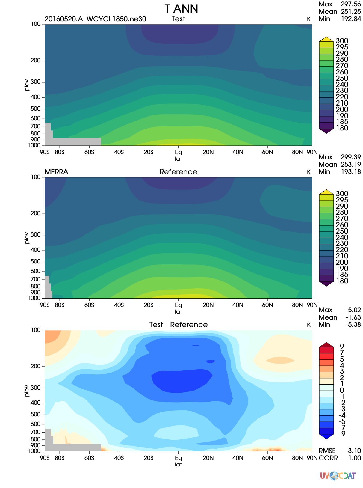

E3SM Diagnostics Package¶
Contents:
Overview¶
This diagnostics package is constructed to support the diagnostics needs of DOE’s Energy Exascale Earth System Model (E3SM) project, formerly known as Accelerated Climate Modeling for Energy (ACME). The ultimate goal of this work is to develop a comprehensive diagnostics package that:
- fully integrates the functionality of NCAR’s AMWG diagnostics package;
- utilizes most updated observational datasets, including remote sensing, reanalysis and in-situ datasets;
- interfaces with diagnostics developed from different E3SM focus groups: atmosphere group, coupled simulation group, land group;
- interacts effectively with the PCMDI’s metrics package and the ARM diagnostics package through a unifying framework: Community Diagnostics Package (CDP).
- is flexible for user-specified diagnostics and configuration for use by other climate models.
Current State¶
Algorithm and visualization codes for latitude-longitude contour maps, polar contour maps, the accompanying sumarizing table and Taylor diagram plots, pressure-latitude zonal mean contour plots, zonal mean line plots, and Cloud Top Height-Tau joint histograms from COSP cloud simulator output. Plots can be created for annual and seasonal climatologies.
The package also supports custom user diagnostics, by specifying plot type, desired region (global, ocean, land, etc.), pressure levels for variables with the vertical dimension.
For flexibility, the code structure cleanly separates data manipulation (reading input files, processing data, etc) from plotting functions. To satisfy specific user tastes, two graphical back-ends are available:
- matplotlib/ cartopy (mpl)
- UV-CDAT VCS (vcs)
Additional back-ends could be implemented if the need arose.
Input Data Requirment¶
The software runs with climatology datasets. The E3SM output on native grid needs to be regridded/remapped first and split to climo files. Please see instructions on Generate, Regrid, and Split Climatologies (climo files) with ncclimo and ncremap.
In addition the file names should following certain pattern to be readable. The filename should start with model name and the season name as following:
B1850C5_ne30_v0.4_DJF_002101_005012_climo.nc B1850C5_ne30_v0.4_JJA_002106_005008_climo.nc B1850C5_ne30_v0.4_MAM_002103_005005_climo.nc B1850C5_ne30_v0.4_SON_002109_005011_climo.nc B1850C5_ne30_v0.4_ANN_002109_005011_climo.nc
Same for the evaluation data sets.

Latitude-longitude contour map (mpl) |

Polar contour map (mpl) |

Pressure-latitude zonal mean contour plot (vcs) |

Zonal mean line plot (vcs) |

Cloud Top Height-Tau joint histograms (mpl) |

Taylor Diagram (mpl) |

Summary Table |
|
{kind=link}
Feature availability for each backend¶
Not all plot sets and feature are currently supported for every backend. The table below summarizes current status.
| Plot set or Feature | mpl | vcs |
|---|---|---|
| Latitude-longitude contour maps | ✔ | ✔ |
| Polar contour maps | ✔ | ✔ |
| Pressure-latitude zonal mean contour plots | ✔ | ✔ |
| Zonal mean line plots | ✔ | ✔ |
| Cloud Top Height-Tau joint histograms | ✔ | ✘ [1] |
| Multi-processing | ✔ | ✔ |